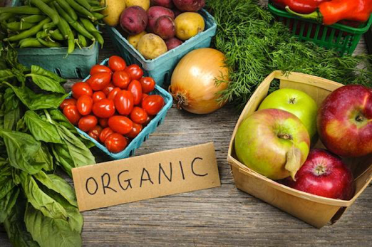

Alimentos orgánicos
Como ya dijimos en este otro artículo que habla sobre los alimentos orgánicos y sus beneficios, este tipo de alimentos está cada vez más introducido en nuestra alimentación debido a sus
múltiples propiedades y beneficios tanto para la raza humana como para el planeta tierra.
Así es; al igual que los alimentos orgánicos nos benefician a nosotros los humanos, también beneficia a nuestro querido planeta tierra debido a
la forma en la que están cultivados y criados sin productos químicos ni fármacos, tal y como veremos a continuación

Beneficios de los alimentos orgánicos
Los alimentos que provienen del sector agrícola están cultivados libres de todo tipo de productos químicos como plaguicidas,
insecticidas, aditivos, pesticidas, fertilizantes artificiales, etc.
Todos estos productos químicos sintéticos dañan a los alimentos que los reciben reduciendo en gran medida la calidad
de sus nutrientes, además de dañar el medio ambiente y directamente la capa de ozono permitiendo que pasen las radiaciones solares, etc.
tipo de alimentos crecen y se reproducen de la forma más natural posible dejando que la naturaleza actúe por sí sola